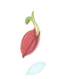
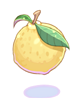

Summer Foraging
This year a lot of bushes have sprouted up around the summer festival! These bushes grow anything from Monster Hunter Foraging items to exclusive summer island items to... summer festival coins? I don't know, maybe someone dropped them there.
Bushes can be picked from 2 times per person. And the bush will remain around for other people to be picked a maximum of 10 times.
The first item you forage will always be a Monster Hunter item, Summer Festival coins, or even rare hats or pet eggs. The second item will be at least 1 of a random cooking ingredient.
Island Foraging Loot
| Loot | ||||
|---|---|---|---|---|
| Image | Name | Amount | Type | Description |
 |
Summer Festival Coin | 1 ~ 25 | Misc | A coin used in the Summer Festival |
| Bite-Sized Tomato | 1 | Misc Summer Cooking |
A small tomato bred for sauce and snack purposes. It is very delicious despite its peculiar shape. | |
| Island Chili | 1 | Misc Summer Cooking |
A green chili far spicier than its size would lead you to believe. It can be used to add heat to dishes. | |
| Sugarcane | 1 | Misc Summer Cooking |
Sugar in it's rawest form, doesn't get sweeter than this! | |
 Green Lemon Green Lemon |
1 | Misc Summer Cooking |
A lemon picked before its prime. Let's be honest, it's basically a lime but still delicious in various foods. | |
 Grape Grape |
1 | Consumable | Clustered berries with smooth skin that can be fermented to make wine. | |
 Strawberry Strawberry |
1 | Consumable | A red berry that is renown for its slightly sweet and sour taste, and is best eaten fresh. | |
 Yggdrasil Berry Yggdrasil Berry |
1 | Consumable | Fruit from the Yggdrasil tree which brings life to our world. Its fantastic taste is full of life. | |
| Golden Flower | 1 | Misc Monster Hunter |
These huge blossoms come from a tiny delicate plant, but the petals have an amazing medicinal property. A brilliant golden flower from The Savage Coast. | |
|  |  Might Seed Might Seed |
1 | Misc Monster Hunter |
The seeds of a plant long used to bestow strength and power. A large red seed from The Savage Coast. |
 Adamant Seed Adamant Seed |
1 | Misc Monster Hunter |
They come from a hearty plant that has unusually tough seed pods and stems. A hard yellow seed from The Savage Coast. | |
|  |  Citron Citron |
1 | Misc Monster Hunter |
It has a refreshing and invigorating scent with a tart and tangy zing! A fragrant citrus fruit from The Savage Coast. |
 Medicinal Herb Medicinal Herb |
1 | Misc Monster Hunter |
The fresh green leaves of a plant traditionally used as a fold remedy. A bitter green herb from The Savage Coast. | |
| Blue Mushroom | 1 | Misc Monster Hunter |
It has slightly bitter, or peppery taste, and has a coarse, grainy texture. A plump blue mushroom from The Savage Coast. | |
 |
Zapshroom | 1 | Misc Monster Hunter |
Take care not to shock yourself while handling them. A vibrant purple mushroom from The Savage Coast. |
 Insect Husk Insect Husk |
1 | Misc Monster Hunter |
Looks like it was some kind of overgrown pill bug. A discarded insect shell found in The Savage Coast. | |
 Nitroshroom Nitroshroom |
1 | Misc Monster Hunter |
No one is sure how this species developed its volatile chemisty, but handle it with care! A volatile red mushroom from The Savage Coast. | |
Grotto Foraging Loot
You can even forage inside the King's Grotto! But instead of picking through bushes you harvest resources from Algae!
You loot similar items to normal foraging except for the exclusive cooking ingredients!
| Loot | ||||
|---|---|---|---|---|
| Image | Name | Amount | Type | Description |
| Cabbage | 1 | Misc Summer Cooking |
An extremely versatile vegetable that can be prepared many different ways or eaten raw. | |
| Sea Cucumber | 1 | Misc Summer Cooking |
A peculiar vegetable that shares its name with a marine animal. It is soft inside like a land cucumber. | |
 |
 Seaweed Seaweed |
1 | Misc Summer Cooking |
An edible seaweed with a strong and distinctive flavor. It can be dried and used in cooking or as a garnish. |
See Also
| Summer Festival | ||
|---|---|---|
| General | Frying Dutchman • King's Grotto • Summer Concert • Hooligan • Summer Tablet • Festival Hat Recolors • Summer Shops | |
| Games | Multiplayer Games • Singleplayer Games • Arcade Games • Frenzy Mode | |
| Activities | Digging • Fishing Tournament • Summer Foraging • Summer Cooking | |